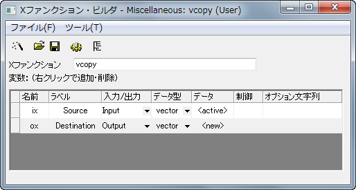

Xファンクションの紹介
サマリー
Xファンクションは、Originツールを構築するフレームワークを用意し、構造化プログラミング環境を提供します。単純なGetNダイアログボックスとは異なり、Xファンクションを使って作成するツールは、実際のデータ処理コードにフォーカスしており、ユーザインターフェースのコードで悩む必要はありません。
Origin8のほとんどのダイアログや関数はXファンクションでできており、その多くはメニューとコマンドラインの両方から実行することができます。Xファンクションを実行する柔軟性により、魅力のあるアプローチでOriginのカスタマイズを行うことができます。
必要なOriginのバージョン:Origin 8.0 SR0
学習する項目
- Xファンクションを作成する
- Xファンクションをスクリプトからアクセス可能にする
- Xファンクションをダイアログモードで使用する
X-Functionを作成する
- ツール：Xファンクション・ビルダを選択、またはF10を押して、Xファンクション・ビルダダイアログを開きます。
- 最初の変数の名前、ラベル、データをix, Source, <active>にセットします。
- リストパネルを右クリックし、コンテキストメニューから変数の追加を選択します。
- 2番目の変数の名前、ラベル、入力/出力、データをox, Destination, Output, <new>にセットします。
- ファイル：保存を選択し、"vcopy"として保存します。
- 
 をクリックしてコードビルダを開きます。
をクリックしてコードビルダを開きます。- コードビルダでvcopy関数に次のコードを追加します。
void vcopy(const vector& ix, vector& ox)
{
if (!ix || !ox)
XF_THROW(CER_NO_DATA);
ox = ix;
}
Xファンクションをスクリプトからアクセス可能にする
- コードビルダのダイアログに戻るボタンをクリックします。
- Xファンクション・ビルダで、変更を保存します。

- クリックしてXファンクションのツリービューを開きます。
- 使用のコンテクストブランチを開きます。Labtalk チェックボックスが選択されていることを確認します。
- Xファンクションを保存し、Xファンクション・ビルダダイアログを閉じます。
- アクティブワークシートの列Aに行番号を入力します。（列Aを選択してから右クリックを行い、列値の一律設定：行番号を選択します。）
- コマンドウィンドウで次のスクリプトを入力すると、列Aを列Bにコピーします。
vcopy col(a) col(b)
Xファンクションのダイアログモード
- Xファンクション・ビルダダイアログを開き、ツリービューでVCOPY.OXFを開きます。
- 使用のコンテクストブランチを開きます。
- メニューブランチを開き、自動GetNダイアログの単純なGetNBoxを選択します。
- Xファンクションを保存し、Xファンクション・ビルダダイアログを閉じます。
- コマンドウィンドウに次のスクリプトを入力し、VCOPY.OXFのダイアログを開きます。
vcopy -d